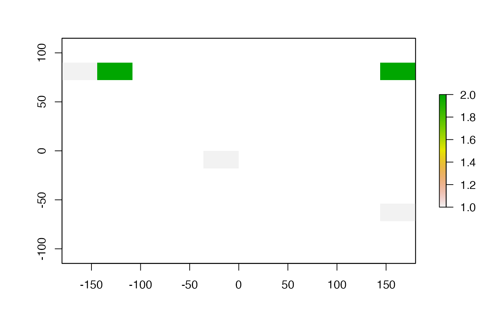
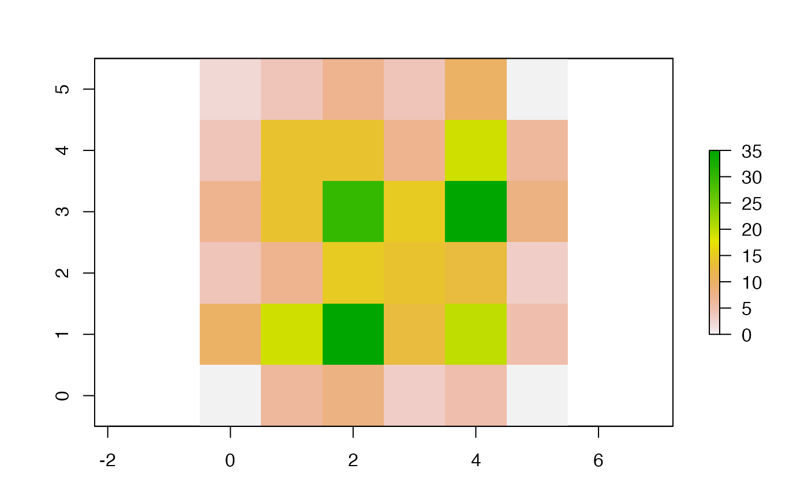

adjacent.RdIdentify cells that are adjacent to a set of cells on a raster.
# S4 method for BasicRaster
adjacent(x, cells, directions=4, pairs=TRUE, target=NULL, sorted=FALSE,
include=FALSE, id=FALSE, ...)Raster* object
vector of cell numbers for which adjacent cells should be found. Cell numbers start with 1 in the upper-left corner and increase from left to right and from top to bottom
the number of directions in which cells should be connected: 4 (rook's case), 8 (queen's case), 16 (knight and one-cell queen moves), or 'bishop' to connect cells with one-cell diagonal moves. Or a neighborhood matrix (see Details)
logical. If TRUE, a matrix of pairs of adjacent cells is returned. If FALSE, a vector of cells adjacent to cells is returned
optional vector of target cell numbers that should be considered. All other adjacent cells are ignored
logical. Should the results be sorted?
logical. Should the focal cells be included in the result?
logical. Should the id of the cells be included in the result? (numbered from 1 to length(cells)
additional arguments. None implemented
A neighborhood matrix identifies the cells around each cell that are considered adjacent. The matrix should have one, and only one, cell with value 0 (the focal cell); at least one cell with value 1 (the adjacent cell(s)); All other cells are not considered adjacent and ignored.
matrix or vector with adjacent cells.
r <- raster(nrows=10, ncols=10)
adjacent(r, cells=c(1, 55), directions=8, pairs=TRUE)
#> from to
#> [1,] 55 44
#> [2,] 1 10
#> [3,] 55 54
#> [4,] 1 20
#> [5,] 55 64
#> [6,] 55 46
#> [7,] 1 2
#> [8,] 55 56
#> [9,] 1 12
#> [10,] 55 66
#> [11,] 55 45
#> [12,] 1 11
#> [13,] 55 65
a <- adjacent(r, cell = c(1,55,90), directions=4, sorted=TRUE)
a
#> from to
#> [1,] 1 2
#> [2,] 1 10
#> [3,] 1 11
#> [4,] 55 45
#> [5,] 55 54
#> [6,] 55 56
#> [7,] 55 65
#> [8,] 90 80
#> [9,] 90 81
#> [10,] 90 89
#> [11,] 90 100
r[c(1,55,90)] <- 1
r[a] <- 2
plot(r)

# same result as above
rook <- matrix(c(NA, 1, NA,
1, 0, 1,
NA, 1, NA), ncol=3, byrow=TRUE)
adjacent(r, cells = c(1,55,90), directions=rook, sorted=TRUE)
#> from to
#> [1,] 1 2
#> [2,] 1 10
#> [3,] 1 11
#> [4,] 55 45
#> [5,] 55 54
#> [6,] 55 56
#> [7,] 55 65
#> [8,] 90 80
#> [9,] 90 81
#> [10,] 90 89
#> [11,] 90 100
# Count the number of times that a cell with a certain value
# occurs next to a cell with a certain value
set.seed(0)
r <- raster(ncol=10, nrow=10)
values(r) <- round(runif(ncell(r)) * 5)
a <- adjacent(r, 1:ncell(r), 4, pairs=TRUE)
tb <- table(r[a[,1]], r[a[,2]])
tb
#>
#> 0 1 2 3 4 5
#> 0 2 4 7 4 10 0
#> 1 4 14 14 7 19 6
#> 2 7 14 30 15 35 8
#> 3 4 7 15 14 13 3
#> 4 10 19 35 13 20 5
#> 5 0 6 8 3 5 0
# make a matrix out of the 'table' object
tb <- unclass(tb)
plot(raster(tb, xmn=-0.5, xmx=5.5, ymn=-0.5, ymx=5.5))
